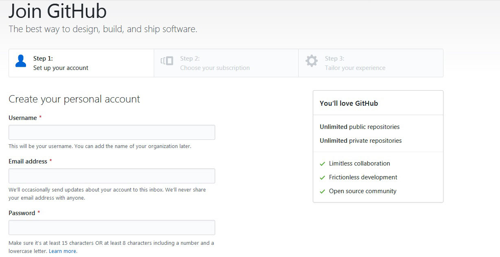
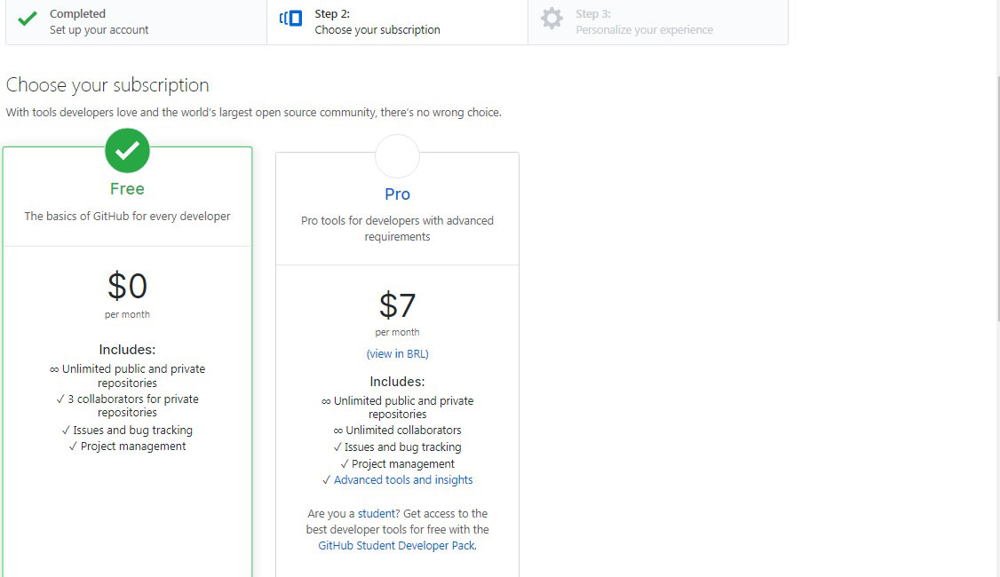
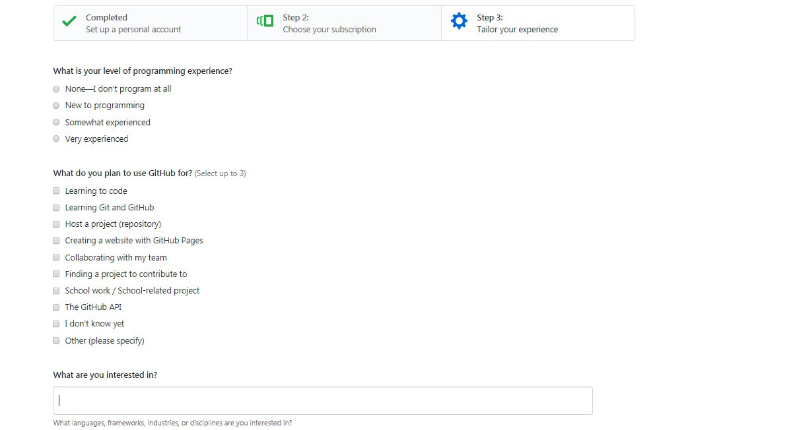
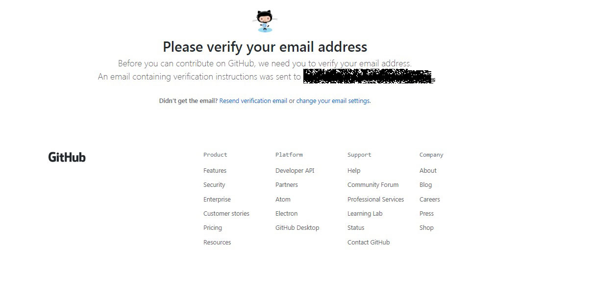

Como Criar Uma Conta
Vamos iniciar nosso registro no GITHUB, a seguir faremos o passo a passo, para que você possa realizar na sua casa. O Site do GITHUB é inteiramente em português, então siga as instruções com calma:
- Acesse https://github.com
- No canto superior direito clique em Sign up (Inscrever);
- Deve ser preenchido, Nome do Usuário, Endereço de E-mail, Senha e uma verificação de conta. 
- Escolha o pacote que você irá utilizar, sendo eles Free ou Pro 
- Você irá fazer uma breve introdução sobre seu conhecimento e seus interesses junto o GITHUB (Este passo pode ser pulado). 
- Finalizando é encaminhado um e-mail para você para confirmar sua inscrição. 